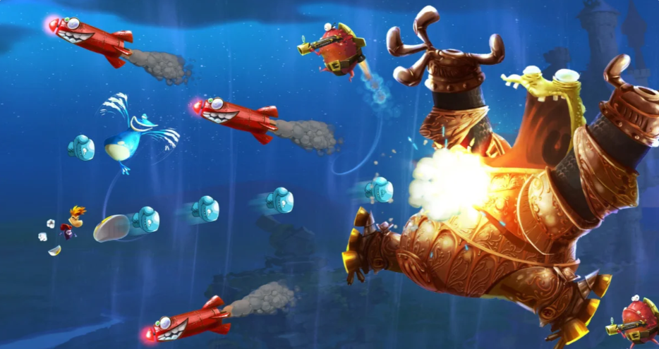

В сети обратили внимание на ныне удалённые вакансии Ubisoft Milan — авторов Mario + Rabbids Sparks of Hope. Разработчикам требуются сотрудники для создания крупнобюджетной игры во франшизе Rayman. Старший геймдизайнер обязан продумать увлекательный и доступный игровой процесс, а геймплейный аниматор должен отвечать за качество анимаций и их соответствие видению игры.
То, что Ubisoft присматривается к возрождению Rayman, уже давно не секрет. В октябре 2024 года компания подтвердила, что «исследует» франшизу, причём тогда на ранней стадии разработки уже находится некий проект. Если верить слухам, речь идёт как минимум о ремейке оригинальной игры, которая вышла ещё в 1995 году.
Кроме того, к работе над новой игрой серии причастен создатель франшизы Мишель Ансель, который покинул индустрию в 2020 году. Теперь он вернулся к сотрудничеству с Ubisoft в роли консультанта, что многие встретили с негативом, припомнив материал о возможной «токсичности» разработчика.
Помимо Ubisoft Milan, к возвращению Rayman причастна Ubisoft Montpellier, известная по Prince of Persia: The Lost Crown. Согласно известному инсайдеру Тому Хендерсону, часть разработчиков метроидвании как раз занимается созданием ремейка знаменитого платформера.
